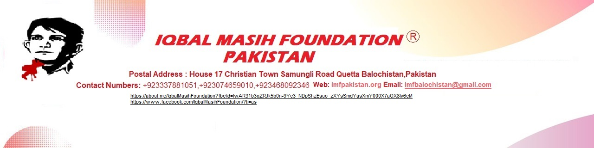

Photo Gallery
 |
 |
.JPG) |
 |
 |
 |
 |
 |
 |

Welcome to Iqbal Masih Foundation, where every donation makes a difference
Iqbal Masih Backround:
Iqbal Masih was born in1983 - 16 April 1995 in Muridka, of Lahore in Pakistan. Pakistan, received The World's Children's Honorary Award 2000 posthumously, for his struggle for the rights of debt slave children. Iqbal became a debt slave at an early age, for the owner of a carpet factory who then sold him on. Iqbal was around 5 or 6 when he started working in the carpet factory. He worked from early morning until evening and was often treated badly. When his mother Anayat needs money for an operation, she took out a loan from a carpet factory owner. The loan, or ‘peshgi’, was in Iqbal’s name. That means that Iqbal owes Ghullah the 5000 rupees (100 US dollars) that his mother’s operation cost. Now Iqbal was a debt slave and the factory owner was in charge of his life. Five years later, Iqbal was liberated from debt slavery. He started attending the Bonded Labour Liberation Front (BLLF) School. Iqbal talked to his friends who worked at carpet factories and spoke at meetings. He gave many carpet worker children the courage to leave their owners. The owners threatened Iqbal who, after receiving an award in the USA, was murdered on 16 April 1995.
Introduction:
IMF was registered in 12 March 2021 as a non-profit organization under the Societies Registration Act No. XI OF 2019 in Quetta Balochistan.Being instrumental in introdueing the concept of Child Rights and in raising issues that were previously not part of the national debate, it has been creating awareness about the UNCRC and Iobbying for implementation of its provisions.It has been working on issues such as education and violence against children, especially corporal punishment, child labor and juvenile justice.it also draws attention to the needs of and issues affecting the Grils childs such as early forced marriage harmful tradition access to education and discrimination. Child Labour is an important and a serious global issue through which all and miscellaneous countries of the world are directly or indirectly affected. It is one of the most complicated issues especially faced by developing countries like Pakistan where the poor class is too big to be controlled easily.
Vision:
A world in which children are valued and empowered and their rights promoted and protected.Our vision at IMF is to create a just and equitable society where every child individual in Balochistan, Pakistan has the opportunity to lead a dignified and fulfilling life. We aspire to be a catalyst for positive change, working towards sustainable development and the empowerment of marginalized communities.
Mission:
To promote and protect the rights of children and to empower them using international standards as a yardstick through advocacy supported by research, awareness raising, Service delivery and human ana instuitutional devclopment.
Community Empowerment: Empowering communities through education, skill development, and capacity-building initiatives to enhance their socio-economic status.
Healthcare Access: Providing accessible and quality healthcare services to improve the well-being of individuals and families in rural areas.
Livelihood Enhancement: Creating sustainable livelihood opportunities through vocational training, entrepreneurship support, and income-generating activities.
Environmental Sustainability: Promoting environmentally friendly practices and advocating for sustainable development to protect natural resources for future generations.
Inclusive Development: Ensuring inclusivity and equality in all our programs, with a focus on the most vulnerable and marginalized segments of society.
Goals: IMF is committed to achieving the following goals:
Education for All: Ensure access to quality education for every child in Balochistan,Pakistan, fostering a culture of learning and knowledge.
Health and Well-being: Improve healthcare infrastructure and services, with a focus on preventive care, maternal health, and disease control.
Economic Empowerment: Facilitate sustainable economic growth in rural areas by promoting entrepreneurship, skills development, and livelihood opportunities.
Community Development: Foster community cohesion, participation, and ownership in development initiatives, building social capital for long-term sustainability.
Environmental Stewardship: Promote environmental conservation and sustainable practices to protect the natural resources that communities depend on.
Gender Equality: Advocate for gender equality and empower women to play active roles in community development and decision-making processes.
.
|
|
|
|
|
|
|
|
|
Head Office: Iqbal Masih Foundation Quetta Balochistan,Pakistan.
Email: imfbalochistan@gmail.com
website: www.imfPakistan.org
Phone : 0318-8043269